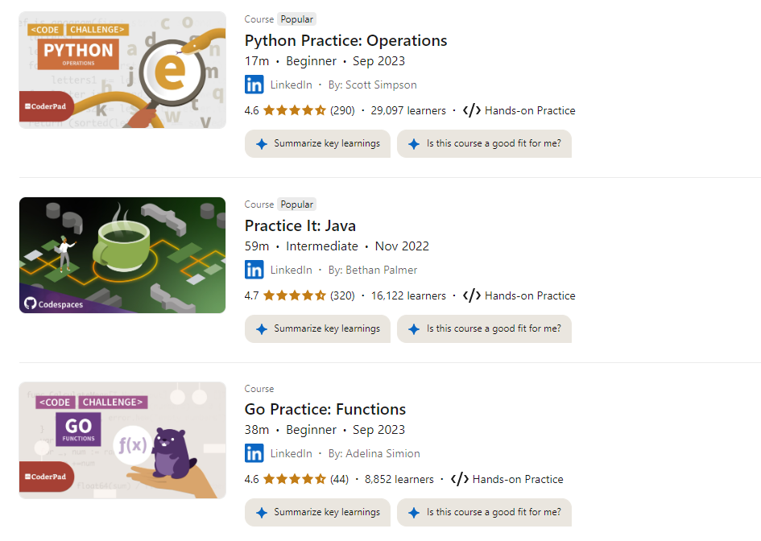

This unit is based on my reflections on being part of a development team and includes my contributions throughout the module.
A Reflective Account of Personal and Professional Growth
There are three methods to gaining wisdom. The first is reflection, which is the highest. The second is limitation, which is the easiest. The third is experience, which is the bitterest.
It is often said that furthering one's education offers numerous personal and professional benefits, with the potential to unlock doors to new opportunities, promotions, or even complete career changes. In fields such as Information Technology (IT), which are evolving at an incredible pace, continuous education is essential to remain competitive. By enhancing skills, individuals can remain at the forefront of their professions, becoming more efficient and productive. However, the benefits of education go beyond career advancement; learning is a fulfilling pursuit that enriches the individual, fuels intellectual curiosity, and keeps the mind agile and sharp, contributing to cognitive health as one ages.
Yet, despite the multitude of advantages that education offers, the journey of learning particularly in a challenging and complex field like computer science can be daunting. It requires not only mental resilience but also physical, emotional, and psychological fortitude. This is particularly true for individuals who, like myself, are transitioning into a new career later in life, balancing the demands of full-time employment, parenting, and caregiving responsibilities.
When I first embarked on my journey to pursue a course in computer science, I did so with a level of enthusiasm, but I was unprepared for the personal challenges I would face along the way. Programming, for instance, is often seen as a field dominated by the younger generation and to some extent, I still believe that. Had I known how demanding this course would be mentally, emotionally and physically I might have hesitated before committing. As a mother of three, a caregiver to elderly parents, and a full-time professional, I now realize that the complexities and difficulties I have encountered throughout this journey. To me its required much more than just academic knowledge. The emotional toll of self-doubt and frustration has been significant, yet these challenges have also provided me with an invaluable learning experience. Let me take you through some of my experiences and challenges in this journey, step by step.
The Group Project
The first major hurdle I encountered was the group project. Working collaboratively on such a task was nerve-wracking for me. I was aware that I would be collaborating with experienced student professionals, individuals who are already established in the industry, while I was still relatively new to IT. Although I had committed to working hard, nothing could have fully prepared me for the range of emotions I experienced. It was met with so many dynamics of the group and to some degree I felt the experience mirrored a real-life professional environment. It was a valuable simulation of workplace collaboration, where each person’s ideas, however well-researched or prepared, might not always be welcomed or appreciated.
One of my greatest challenges was articulating my thoughts and feedback. Although I am comfortable conducting research and interpreting information, I found myself paralyzed by fear during group discussions. I feared that my contributions would be dismissed or undervalued because of my lack of experience compared to the other group members. In some instances, this fear was realized when my ideas were overlooked. Yet, in retrospect, this experience has been one of my most valuable lessons. Working through these challenges has enhanced my confidence and resilience. I am now deeply grateful for the opportunity to have faced such a trial, as the insights I gained from this project are immeasurable.
Data Structures Activity
Following the completion of the group project, I moved on to the individual tasks, one of which involved data structures. It is essential to remind you, the reader that I am not yet a programmer, and my enrolment in this course marks my transition into the IT field. My current day-to-day responsibilities are vastly different, and therefore, when it comes to tackling programming modules, I find myself needing to recall what I have previously learned. This proved to be particularly challenging with the data structures unit, as the last time I had encountered the topic was during an introductory module several months earlier.
To re-familiarize myself with the subject matter, I turned to external resources, such as LinkedIn Learning and Udemy, both of which offered affordable or free courses. I found myself revisiting these platforms frequently, seeking verbal explanations of the various concepts to refresh my memory. This process, while necessary, was time-consuming. As a working mother, I had to dedicate the early hours of the morning before my children woke up and before heading to the office to complete these courses. In the evenings, I would set aside additional time to continue the momentum. This disciplined approach was essential to ensure that I retained what I had learned. To this day, I have saved all my programming courses, with the goal of practising weekly to achieve mastery and, at the very least, develop a strong recall of programming concepts without needing constant external guidance.
This approach has been instrumental in navigating the programming sections of the course. I have relied on a combination of saved courses and hands-on practice to enhance my technical skills and ensure the successful completion of each module. Below is an example of the free courses I have been using to practice:
Figure 1: Free Courses for practice on LinkedIn
My e-Portfolio
Another significant challenge I faced was working on my e-Portfolio. I opted to use a different template, but I encountered several obstacles when it came to working with GitHub. Nevertheless, my new approach to learning one that prioritizes seeking out resources, gaining clarity, and finding different methods to grasp the material proved invaluable. I diligently sought out additional resources until I was able to complete my GitHub work successfully. To say that I am proud of myself would be an understatement. Although my e-Portfolio is not entirely complete, I have made significant progress, particularly in the Software Engineering Project Management (SEPM) module. The remaining task involves transferring my previous work into the new template and organising it in my GitHub account, creating repositories for each module.
The e-Portfolio, available at https://zukzin.github.io, is neatly divided into six sections. The homepage includes an "About Me" section, detailing my background and experiences. The collaborative discussions from the modules, along with peer responses, are located at https://zukzin.github.io/collaborative-discussions.html. Additionally, individual reflective pieces can be found at https://zukzin.github.io/reflective-pieces.html.
At present, only the reflective piece for SEPM is available, as the others are still in the process of being transferred. The e-Portfolio also delves into the SEPM module, with detailed pages for the formative and seminar activities, all of which are well-structured and easy to navigate. I take immense pride in this achievement, as it not only reflects my learning journey but also showcases my growth and development in a tangible format.
Individual Project Submission
One of the final challenges I faced was the Individual Project. This particular task pushed me beyond my limits in ways I had not anticipated. Despite being familiar with technology. especially using recording tools for video and screen capture at work, the process of completing this project was fraught with difficulties. After developing the content of my presentation and addressing the challenges for EDCs, I encountered several issues with the recording. Numerous takes were required, and just when I thought I had succeeded, I discovered that the file size was too large to submit through the portal. Thankfully, I had started the submission process early, allowing me the time to re-record the video using my laptop and successfully submitting it on time.
In conclusion, my initial motivation for enrolling in this course was to acquire the skills needed to transition into project management within the IT sector. However, as the course progressed, I realized that project management was not as heavily emphasized as I had anticipated. Nevertheless, this module opened up a new realm of possibilities for me. It has provided the foundation I need to pursue further certifications, such as PRINCE2, Certified ScrumMaster (CSM), or Agile certifications, to build my expertise in project management. Furthermore, this journey has taught me that, while I may not be a technical expert in coding, my ability to understand and interpret programming languages offers significant opportunities in the field of IT project management.
Pursuing this course at a later stage in life has not only benefited me personally but has also positively impacted those around me my family, friends, colleagues, and the broader community. I have gained invaluable life lessons, developed professionally, and have embarked on a lifelong learning journey that continues to inspire and challenge me.
{kind=link}